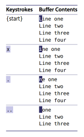
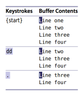
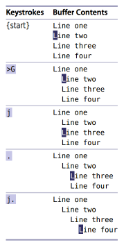

원문 Practical Vim - Tip 1 Meet the Dot Command
점명령(Dot Command)은 마지막 변경을 반복합니다. 이것은 Vim에서 가장 강력하고 유용한 명령입니다.
Vim의 도움말에서는 점명령을 단순히 “마지막 변경을 반복”이라고 적혀있습니다. 하지만 이와 같은 단순한 설명으로는 점명령의 핵심을 알 수 없습니다. 우선 변경이라는 것이 무엇인지 알아야 합니다.
마지막 변경이라는 것은 하나의 문자를 변경하는 것일 수도 있고, 라인 전체, 혹은 파일 전체를 변경하는 것일 수도 있습니다.
Line one
Line two
Line three
Line four
x 명령은 커서 아래 문자를 삭제합니다. 여기에서 점명령을 사용하면 마지막 변경은 커서 아래 문자를 삭제하라고 말하는 것입니다. 변경한 것을 취소하기 위해 u 키를 여러 번 누르면 파일은 원래 상태로 돌릴 수 있습니다.

dd 명령 또한 삭제를 수행하지만, 라인 전체를 삭제합니다. 만약 dd 입력한 후 점명령을 사용한다면 마지막 변경은 라인을 삭제하라고 지시하는 것입니다.

마지막으로 >G 명령은 현재 라인에서 파일 끝까지 들여쓰기를 증가시킵니다. 만약 이 명령 뒤에 점명령이 따라온다면, 마지막 변경은 현재 위치에서 파일 끝까지 들여쓰기를 증가시키도록 합니다. 예제에서는 차이점을 강조하기 위해 두 번째 라인에 커서를 두고 시작할 것입니다.

점명령은 작은 매크로입니다.
x, dd 그리고 > 명령 모두 명령모드에서 실행되고, 점명령에 의해 마지막 변경이 반복되었습니다. 하지만 마지막 변경에 대한 더 정확한 의미는 입력모드로 들어가는 순간부터 명령모드로 돌아오기까지 변경을 의미합니다. 따라서 점명령은 앞서 보여드린 명령 반복 외에 입력모드에서 명령모드로 돌아오기까지 변경을 기록한 것을 반복할 수 있는 작은 매크로입니다.
주의
책을 읽고 제가 이해한 것을 적은 글입니다. 원문과는 차이가 있습니다.
수정이력
- 2014.05.27 최초작성
- 2016.08.14 맞춤법 및 주의 추가